GitNex 4.3.0 is here with bunch of features and ui enhancements
May 16, 2022 by @mmarif
⚠️ Notice: GitNex 4.3.0 does not support Android 5 and 5.1, please upgrade to at least 6.
1. Show labels in issues and pr lists
Issues and PRs lists will now show labels assigned to that issue/pr. The default style is a color dot. But you can change this to text over color from Settings -> Appearance and enable Labels With Text Support.
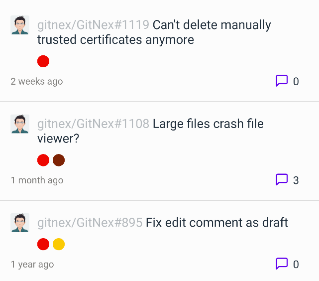
Labels as dots
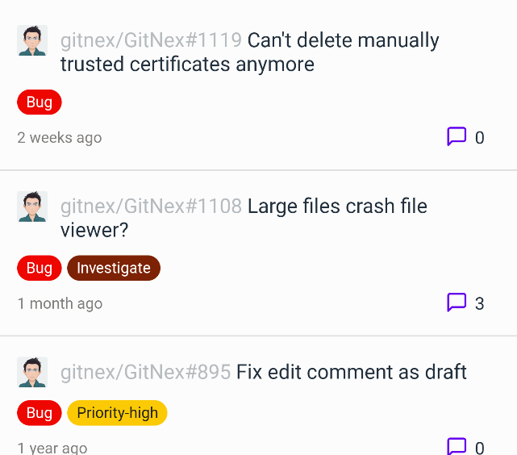
Labels with text
2. My issues with remote search and filters
GitNex now has the ability to load your issues. A new menu item is added to the main navigation drawer.
- You can remote search the issues instead of local search filter.
- We have added filters like Open, Closed and Assigned to Me.
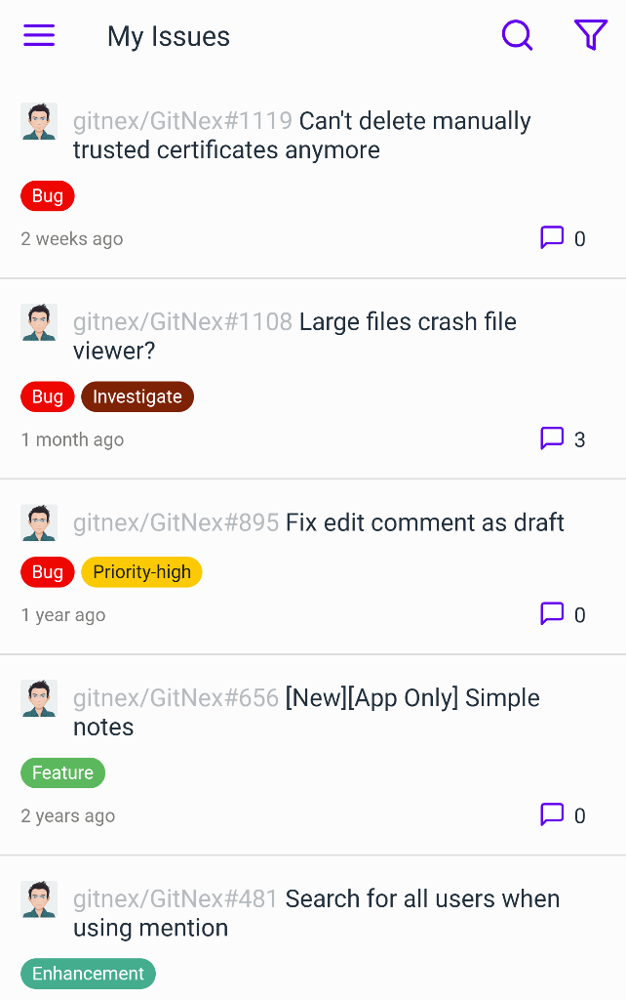
My Issues
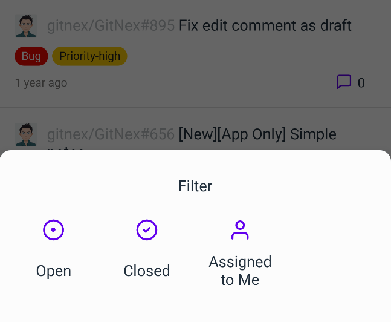
My Issues filters
3. Delete a release
You can delete a release in case you need to. This is an Admin action, normal users won't see this option.
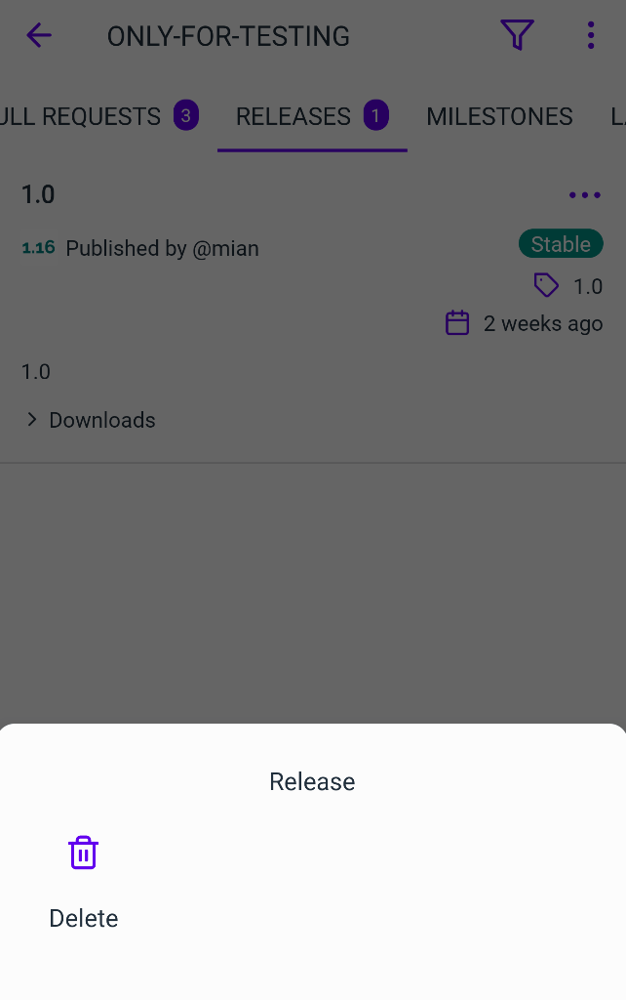
Delete a release
4. Assign repository to a team in an organization
Useful feature for those who manage organizations, repositories and teams.
Go to Organizations -> Teams and click on any team. Click on the menu and you will see Add option. Add a repository from the available list of repos to that team.
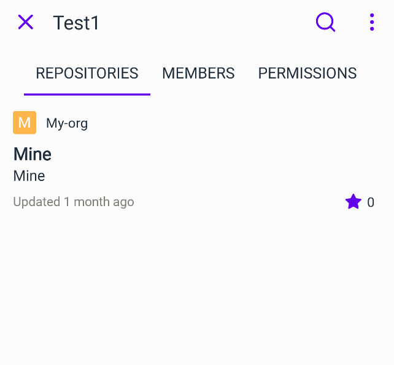
Organization team repositories
5. Unadopted repository management for Admins
If there are unadopted repositories on your instance laying around, you can either adopt them or just delete them from the instance to free up some space.
Click on Administration(available to instance Admins only) from the navigation drawer to see the option. Tap on it to see the list.
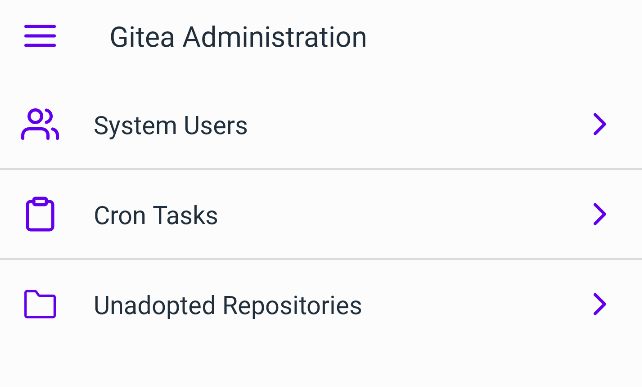
Unadopted repository management
6. Share/Copy/Open actions across org/repository/issue/pr/comments
We have unified these actions across issues, prs, repositories, organizations and comments etc.
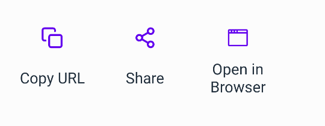
Share/Copy/Open actions
7. Browse user profile/repositories/organizations
This feature was introduced in early release of GitNex but was not completed becasue of core issues in the app. We have completed it in this release with some huge refators to the app.
Now you can browse user profiles, repositories, organizations etc.
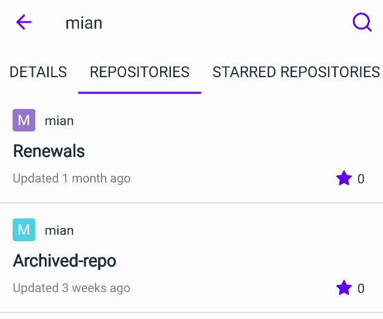
User profile/repositories/organizations
8. Repository forks
This feature was available too in early release but was hidden due to some issue in the app core infrastructure. As we have fixed most of them. It is available now.
Go to repository Details tab and click on the fork icon.
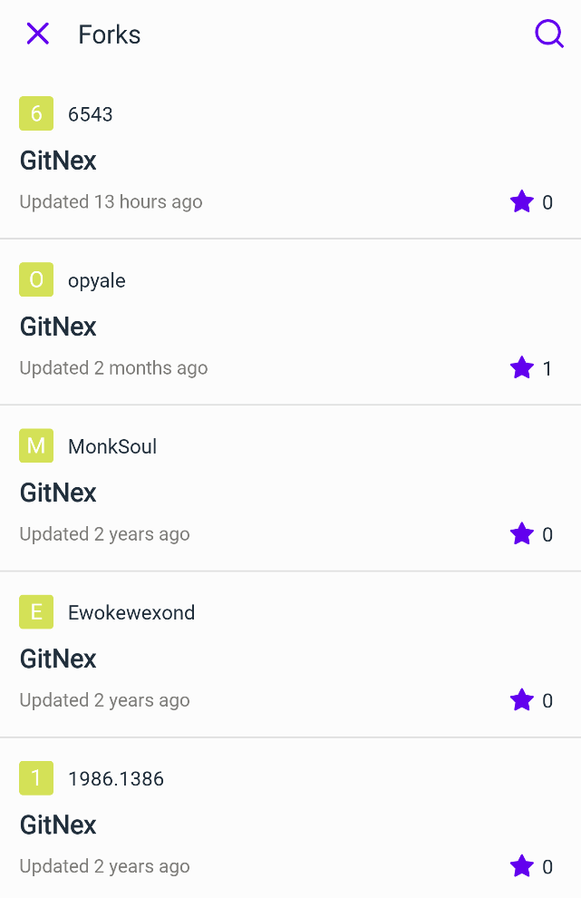
Repository forks
9. Single commit screen with diff view
We have added single commit screen for all the files commited in that single commit under a branch.
Go to Files tab in a repository, click on the menu and click Commits. You can now click on any commit to view it's files and then see what is changed in that file(diff view).
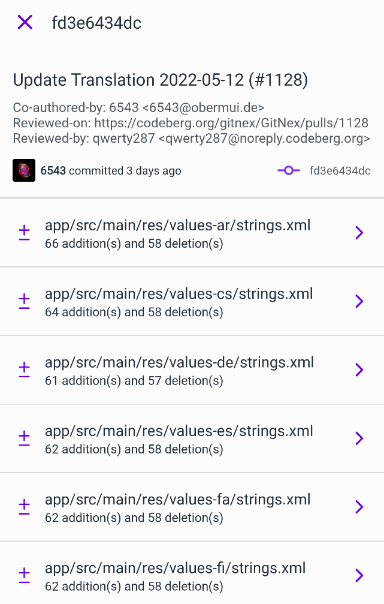
Single commit screen
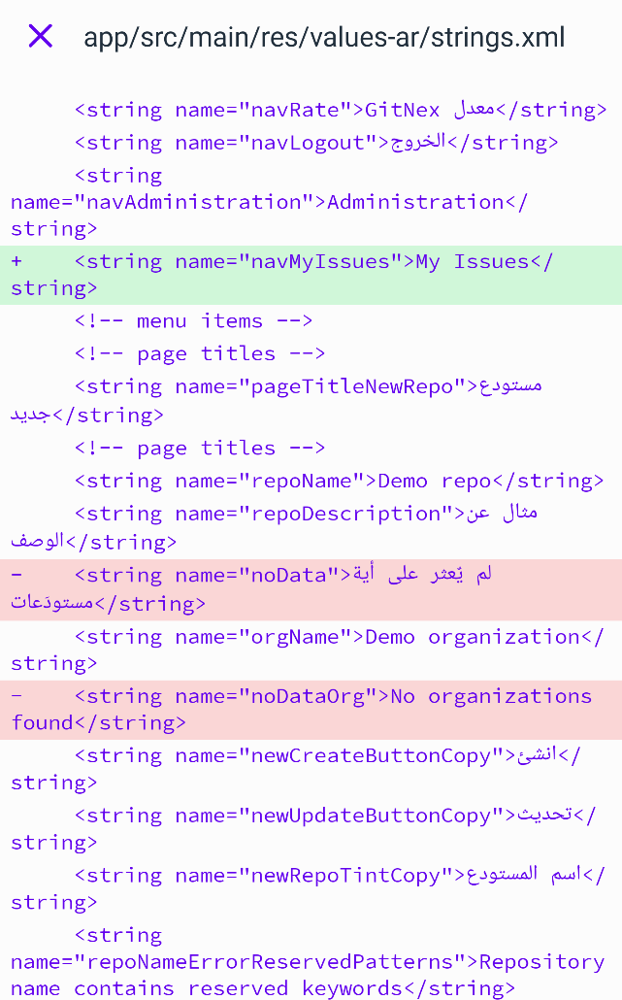
Single commit screen diff view
10. Support for issues/pr hashes
I am sure you come across this everyday. You go to an issue/pr and some one mentioned another issue/pr in a comment.
GitNex now support deep linking for issue/pr hashes. Click on any mentioned issue/pr and you will be brought to that issue/pr straight away. #1130 in the example below.
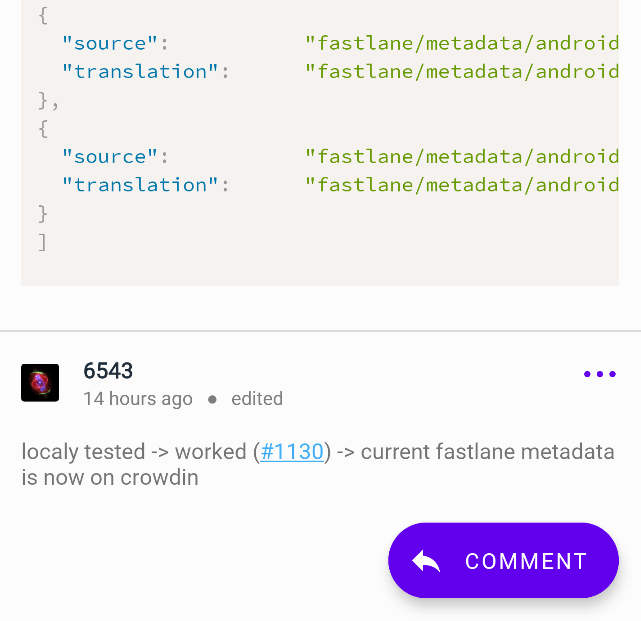
Issues/pr hashes
11. UI enhancements and improvements(bottom sheets, settings)
We keep refreshing the UI across GitNex from time to time. This time is no different, you will find many new layouts and enhanced UI acorss the whole app.
It is not limited to bottomsheets only. We have added UI refinements to everywhere possible this time.
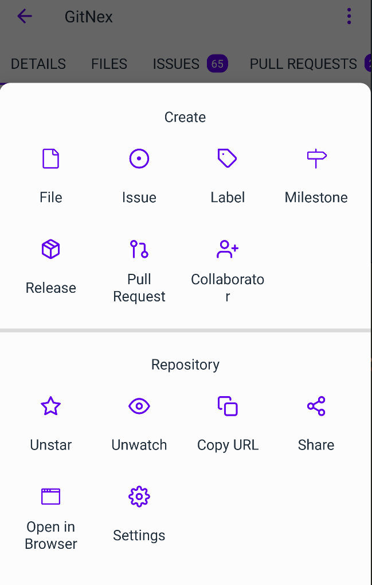
Bottomsheet UI - repository
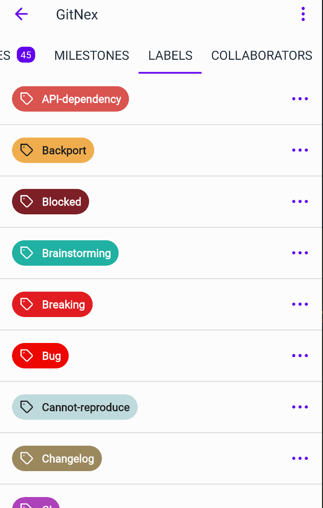
Labels
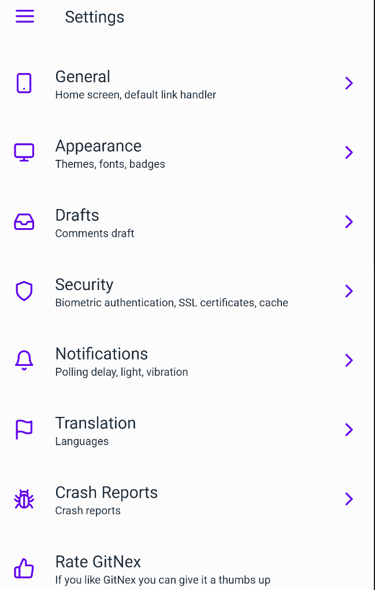
Settings
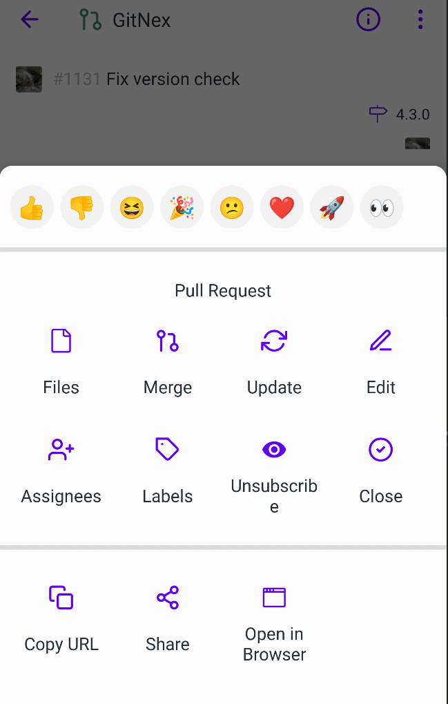
Bottomsheet UI - pr
12. Follow system theme option for dark and pitch black themes
We have added system enabled theme option where the app follow your phone theme style.
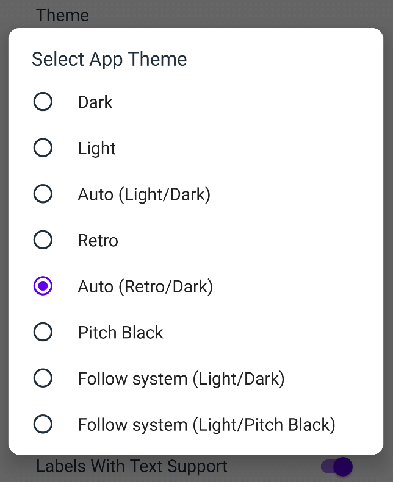
Follow system theme
12. Remote search your project issues
Until 4.2.0 searching issues have used local filter for that current page only instead of fetching things from remote. So we have replaced it with a remote search, now searching issues is more refined and will show you what you are looking for.
It works with issue filters nicely like milestone, open and close issues.
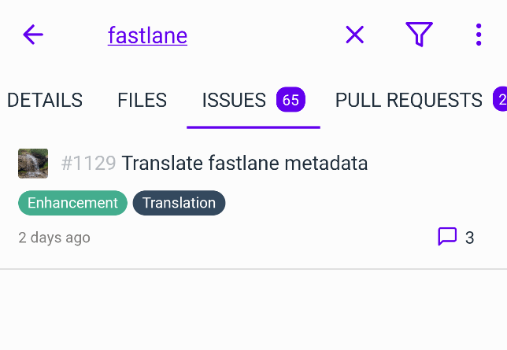
Remote search issues
13. Show notification count when switch accounts
A small but useful UI change to let you know about notifications. Now when you switch accounts, a popup will appear if there are any notifications for that account. So you don't have to go to nav drawer to check it anymore.
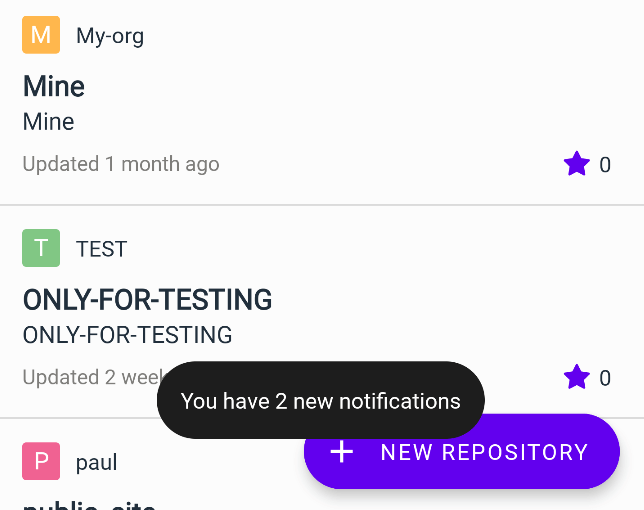
Notification count
Improvements
Not limited to these mentioned improvements, there are others which we skipped but you will find it anyway. 😊
- Show draft status for a release if it's a draft
- Pagination for repositories, org, admin users and more
- Use icons for milestone and due date in issue/pr detail screen
- Refresh tags list after creating and deleting/p>
- Improve permissions for Admins(non admin user can't see org teams now)
- Improve release/tags downloads
- Show if repository is a fork in repository Details tab
- Show base branch and merge into branch in PR detail screen via info icon
Bug fixes
- Fix repository size bug if repository is in GB and TB
- Fix bug in URL encoding for file browser
- Fix crash on objects loaded from LFS in file viewer
We hope you enjoiyed this huge feature rich release.
Contribute Downloads